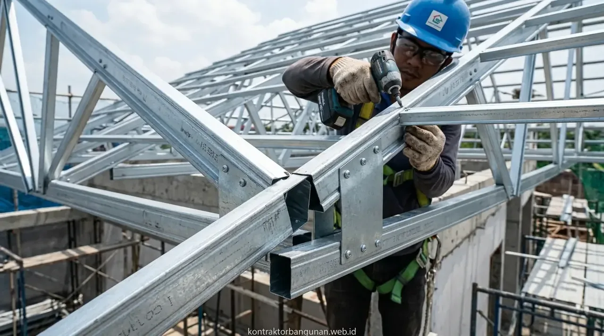

Bagaimana Hasil Perbandingan Spesifikasi Besi Beton SNI dan Non-SNI?
Perbandingan teknis menunjukkan bahwa besi beton ber-SNI memiliki kepastian komposisi kimia, daya lentur tinggi, serta sertifikasi uji tarik yang jelas di laboratorium.
Berdasarkan regulasi teknis SNI 2052:2017, besi beton standar dibagi menjadi besi polos (BjTP) dan besi ulir (BjTS). Sebaliknya, besi non-SNI atau yang lazim disebut sebagai besi banci diproduksi tanpa pengawasan mutu ketat sehingga ukurannya jauh di bawah standar nominal.
| Parameter Evaluasi | Besi Beton Ber-SNI | Besi Beton Non-SNI (Banci) |
|---|---|---|
| Toleransi Diameter | Presisi (Maksimal 3% - 7%) | Sangat Tinggi (> 10% - 20%) |
| Kuat Tarik / Leleh | Teruji Minimal 280 - 520 MPa | Tidak Teruji / Sangat Getas |
| Tanda Markah / Logo | Embos Merek & Kelas Tercetak Jelas | Polos / Tanpa Kode Cetak Resmi |
| Sertifikat Mill Test | Tersedia Resmi dari Pabrikan | Tidak Memiliki Sertifikat Resmi |
| Keamanan Gempa | Sangat Tinggi (Resilien & Daktil) | Sangat Berbahaya (Patah Getas) |
Perbedaan mendasar pada kekuatan leleh material ini berimplikasi langsung terhadap kapasitas penahanan beban hidup dan beban mati bangunan bertingkat. Ketidakpastian sifat mekanis pada baja tulangan non-SNI membuat kalkulasi struktur teknik sipil menjadi tidak valid dan rawan bahaya fatal.
- BjTP 280 (Besi Polos): Kuat leleh minimum 280 MPa, kuat tarik minimum 350 MPa, dengan perpanjangan regang minimal 11%.
- BjTS 420B (Besi Ulir Gempa): Kuat leleh minimum 420 MPa hingga maksimal 540 MPa dengan rasio kuat tarik terhadap kuat leleh ≥ 1.25 untuk daktilitas seismik.
- Besi banci umumnya menggunakan bahan daur ulang berkualitas rendah dengan komposisi karbon tidak terkontrol, membuatnya rapuh dan mudah patah saat ditekuk (*bending*).
Apa Saja Bahaya Utama Menggunakan Besi Beton Non-SNI untuk Bangunan?
Penggunaan besi beton non-SNI berisiko memicu kegagalan struktur mendadak karena tulangan beton tidak mampu menahan gaya geser dan gaya tarik dari beban gedung.
Beberapa bahaya teknis utama yang ditimbulkan meliputi:
- Keretakan Dinding dan Kolom: Besi yang terlampau kecil membuat balok cor melengkung (defleksi berlebih), memicu retak struktur pada pasangan bata dan plesteran dinding gedung.
- Keruntuhan Saat Terjadi Gempa: Besi banci cenderung patah secara mendadak (brittle failure) karena memiliki tingkat daktilitas yang sangat rendah saat menerima siklus beban gempa dinamis.
- Korosi dan Pelapukan Dini: Ketidakpresisian ukuran sering kali mengurangi tebal selimut beton rencana, membuat kelembapan udara dan air hujan cepat meresap sehingga besi berkarat dan beton terkelupas (spalling).

Pengujian laboratorium kuat tarik dan kelayakan mekanis baja tulangan ber-SNI oleh Kontraktor Bangunan memastikan integritas kerangka beton bertulang.
Mengapa Mempercayakan Pengadaan Material kepada Kontraktor Bangunan Lebih Menguntungkan?
Bekerja sama dengan Kontraktor Bangunan terpercaya memastikan seluruh pasokan besi beton yang dikirim ke lokasi pengerjaan telah lolos verifikasi mutu dan bersertifikat SNI resmi.
Keuntungan strategis menggunakan pelaksana profesional berlisensi:
- Pengujian Ukuran Skitmat: Tim teknis dan pengawas lapangan memverifikasi diameter fisik besi beton menggunakan jangka sorong (vernier caliper) presisi sebelum dirakit menjadi kerangka pembesian kolom, balok, dan fondasi.
- Jaminan Sertifikat Mill Test: Menjamin setiap pengiriman material dilengkapi dokumen pengujian laboratorium resmi (Mill Test Certificate) langsung dari pabrik pembuat baja terkemuka.
- Efisiensi Struktur Tanpa Pemborosan: Menyusun pembesian dan tabel pemotongan baja (Bar Bending Schedule) sesuai kalkulasi insinyur sipil sehingga gedung berdiri kokoh tanpa pembengkakan biaya sisa material.
Untuk memastikan keamanan struktur gedung dan investasi jangka panjang bisnis Anda, menyerahkan pemilihan material dan pengerjaan konstruksi kepada Kontraktor Bangunan adalah keputusan komersial paling bijak dan terukur.
Bagaimana Cara Membedakan Besi Beton SNI dan Non-SNI di Lapangan?
Membedakan material SNI dan non-SNI dapat dilakukan secara visual melalui kode cetak embos, pengukuran diameter menggunakan skitmat, serta kelengkapan dokumen pengiriman material.
Berikut adalah petunjuk praktis identifikasi fisik di lokasi proyek konstruksi:
- Periksa Tanda Embos: Besi ber-SNI memiliki cetakan timbul (emboss) permanen pada badan besi yang memuat merek produsen, ukuran diameter, dan kelas baja (contoh: SNI, KS, BjTS 420B, dsb).
- Gunakan Caliper / Skitmat Digital: Ukur diameter bersih pada besi polos atau diameter sirip utama pada besi ulir. Jika besi berlabel 12 mm namun hasil pengukuran nyata hanya 10,2 mm, maka besi tersebut dipastikan non-SNI atau besi banci.
- Perhatikan Kode Warna Ujung Besi: Pabrikan baja SNI resmi memberikan tanda cat warna khusus pada kedua ujung batang besi untuk mengidentifikasi kelas kuat leleh dan grade material tersebut secara cepat.
FAQ seputar Review Besi Beton SNI vs Non-SNI
Kesimpulan Praktis
Hasil review besi beton sni vs non sni menegaskan bahwa besi ber-SNI adalah standar mutlak yang wajib digunakan untuk menjamin keamanan dan keandalan struktur bangunan. Penghematan biaya awal dengan membeli besi non-SNI berisiko mendatangkan kerugian besar di masa depan. Pastikan proyek pembangunan Anda ditangani oleh tim ahli yang mengutamakan kualitas material dan keselamatan struktur. Hubungi tim Kontraktor Bangunan kami sekarang untuk konsultasi teknik dan pengadaan material standar SNI!